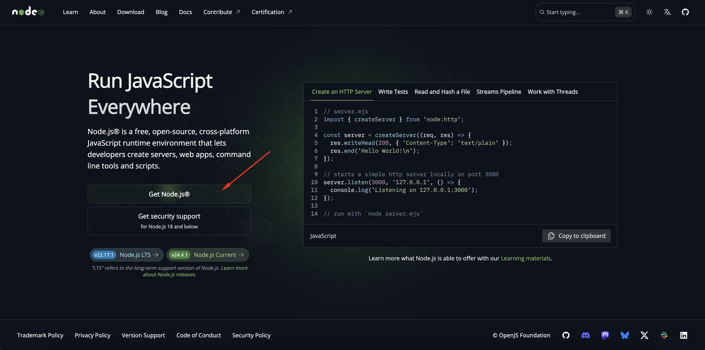
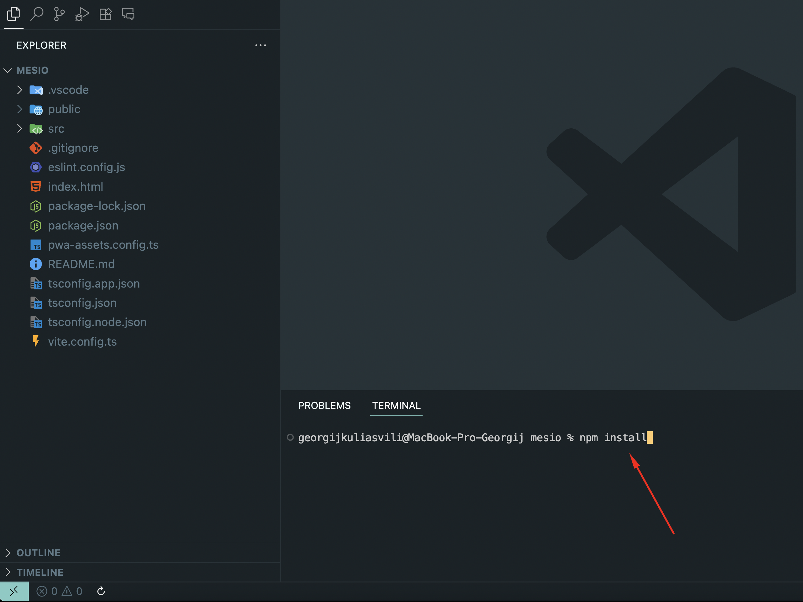
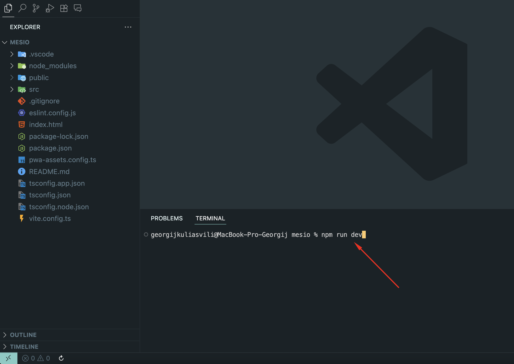
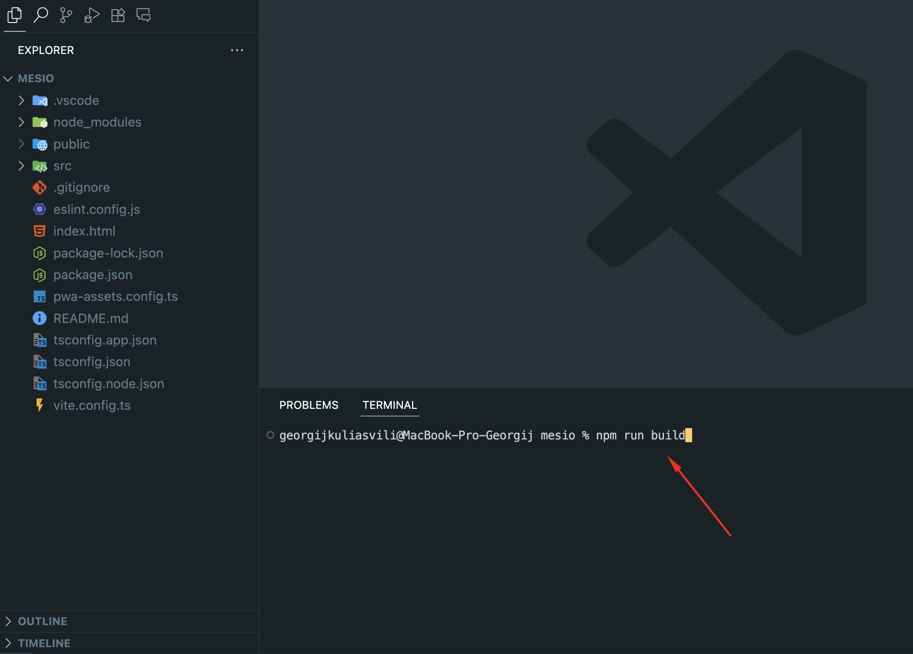
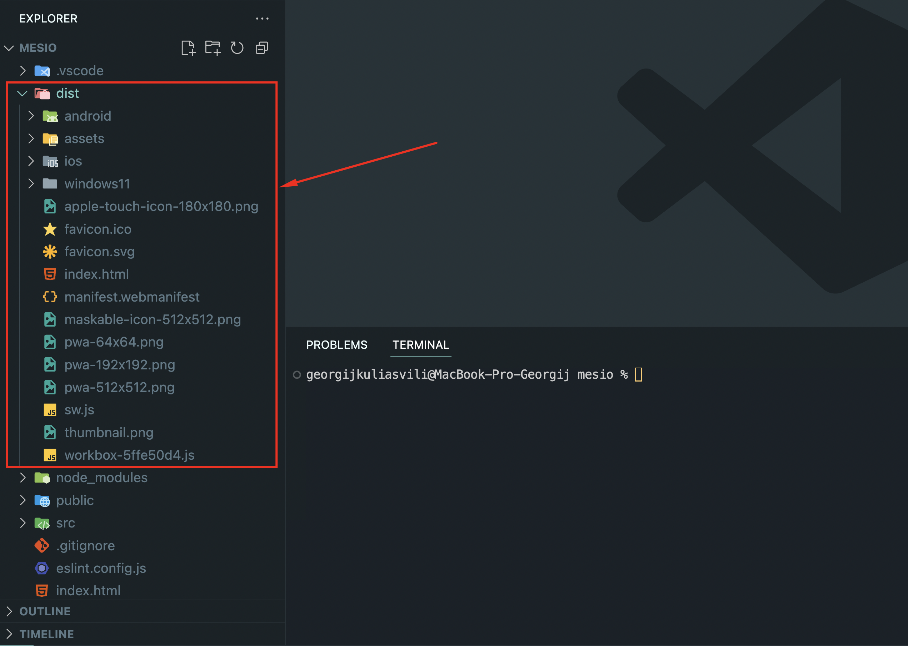

Thank you for purchasing my theme. If you have any questions that are beyond the scope of this help file, please feel free to email via my user page contact form here . Thanks so much!
Before setting up the project, you should have a basic understanding of the following: Html, Css, Javascript, React, Node.js, npm for more information about the above topics, you can visit the following links: HTML CSS Javascript React Node.js npm
Your computer should have Node.js and npm installed to manage the dependencies. You can download Node.js (which includes npm) from the following link: Node.js

To install the project dependencies, run the following command in the
project directory:
npm install

To run the project, use the following command:
npm run dev

To build the project, run the following command:
npm run build

After running the build command, the build folder will be ready for deployment. Move all the files from the build folder to your server.

If you have any questions or need support, please contact me via
email:
kul.giorgi@gmail.com
The project uses the following dependencies:
The project uses the following font: